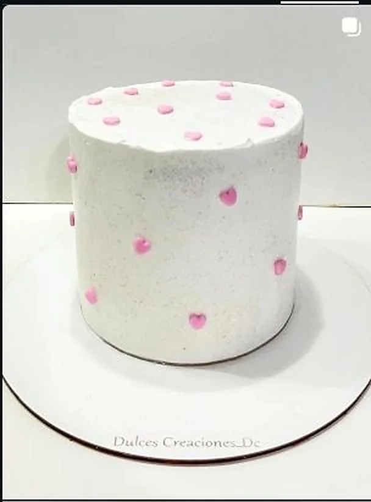
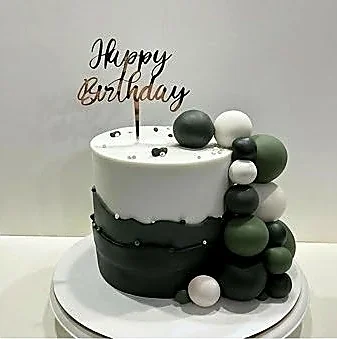
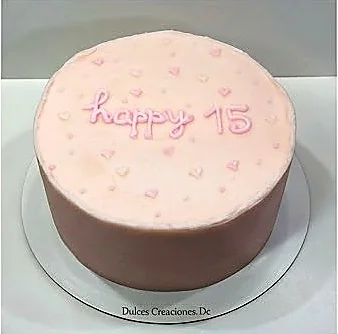

100% libres de gluten
Bizcochuelos preparados con harinas sin gluten certificadas. Producimos con separacion total de contaminacion cruzada para cuidar tu salud.
Sin TACC . Aptas Celiacos . Artesanales . Deliciosas
Consultar por WhatsAppPreparamos tortas sin gluten aptas para celiacos con la misma dedicacion y sabor. Bizcochuelos libres de TACC, rellenos artesanales y decoraciones personalizadas seguras.
Bizcochuelos preparados con harinas sin gluten certificadas. Producimos con separacion total de contaminacion cruzada para cuidar tu salud.
Logramos una textura esponjosa y un sabor delicioso que no tiene nada que envidiarle a las tortas tradicionales. Nadie nota la diferencia.
Podes pedir cualquier diseno de nuestro catalogo en version sin gluten. Infantiles, cumpleanos, casamientos, baby shower, todo es posible.
Mismo sabor, misma calidad, cero gluten. Tortas seguras para celiacos.







En Dulces Creaciones ofrecemos tortas sin gluten personalizadas en Temperley y Zona Sur GBA. Nuestros bizcochuelos sin TACC estan elaborados con harinas certificadas libres de gluten y producidos con estrictos protocolos para evitar contaminacion cruzada.
Disponibles en vainilla, chocolate y marmolado con rellenos de dulce de leche, crema mousseline o ganache. Podes elegir cualquier diseno de nuestro catalogo en version apta celiaco.
Retiro en Temperley
Preparado con harina de arroz, almidon de maiz y fécula de mandioca. Esponjoso, humedo y delicioso. No notas la diferencia.
Harinas certificadas libresTodos los disenos infantiles disponibles en version sin gluten. Personajes, colores y decoracion apta para niños celiacos.
Seguras para los chicosCasamientos, cumpleanos, baby shower y mas. Ofrecemos opciones sin gluten para que nadie se quede sin torta.
Inclusion para todosCualquier diseno de nuestro catalogo esta disponible en version sin gluten. Elegi el que mas te guste.
Bizcochuelo sin gluten de vainilla, chocolate o marmolado con relleno de dulce de leche, crema o ganache.
Las tortas sin gluten aptas para celiacos se retiran en Temperley, Buenos Aires. Coordinamos dia y horario.
Escribinos y pedi tu torta apta celiaco con el diseno que mas te guste
Consultar por WhatsAppSi, utilizamos harinas certificadas libres de gluten y seguimos protocolos estrictos para evitar contaminacion cruzada en nuestra cocina.
Si, todos los disenos de nuestro catalogo estan disponibles en version sin gluten: infantiles, princesas, superheroes, baby shower y mas.
Las tortas se retiran en Temperley, Buenos Aires. Coordinamos dia y horario.
Agrega Dulces Creaciones a tu pantalla
Accede rapido a nuestros disenos